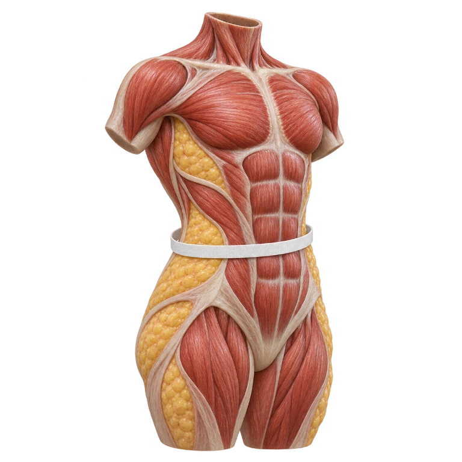
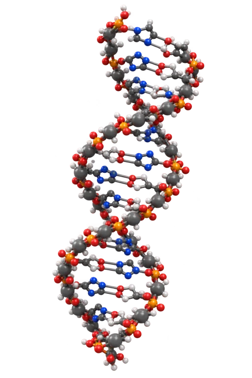
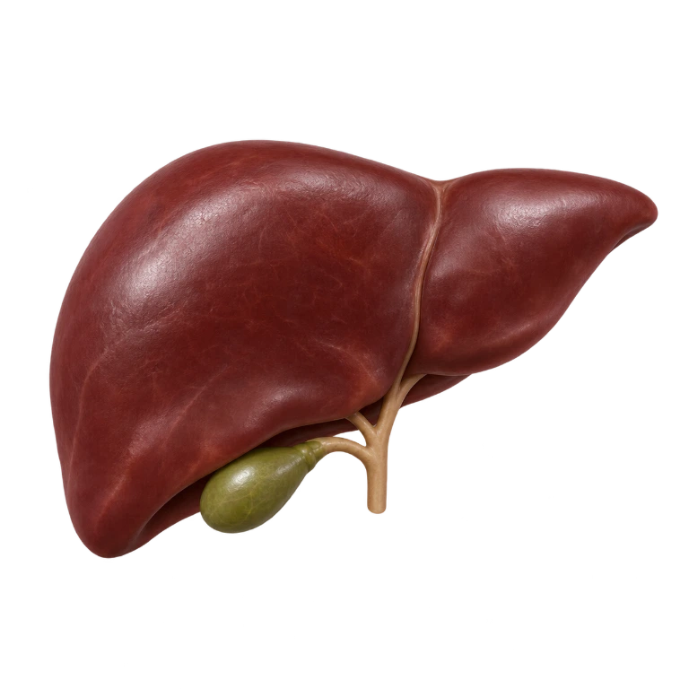
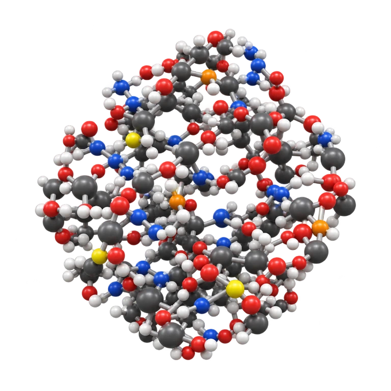

Alimentación y salud cardiometabólica
Las publicaciones de la Cohorte han analizado cómo se relacionan el consumo de bebidas, los patrones alimentarios, la presión arterial y los indicadores metabólicos.
La información reunida a lo largo del seguimiento ha dado lugar a publicaciones en distintas áreas de la salud, por ejemplo:
Explorar la información integradaLas publicaciones de la Cohorte han analizado cómo se relacionan el consumo de bebidas, los patrones alimentarios, la presión arterial y los indicadores metabólicos.

El seguimiento permite estudiar la relación temporal entre la adiposidad, los estilos de vida y los indicadores de resistencia a la insulina.

Distintos análisis estudian la densidad mineral ósea y su relación con la alimentación, los antioxidantes y los factores genéticos.
La investigación también aborda los síntomas depresivos y su relación con la actividad física, la alimentación y experiencias del entorno personal.

En subgrupos de participantes se han estudiado variantes genéticas, composición de la microbiota y su relación con la salud metabólica.

La información de la Cohorte ha permitido investigar herramientas no invasivas para evaluar el riesgo de fibrosis hepática a partir de mediciones clínicas y bioquímicas.
Cada investigación utiliza las fases y los participantes que corresponden a su pregunta de estudio. Los hallazgos describen asociaciones en los grupos analizados.
Los dominios fenotípicos y multiómicos ofrecen distintas perspectivas de la salud a través de las fases.

Caracterización
Cuestionarios, evaluación clínica, marcadores sanguíneos y composición corporal.

Investigación molecular
Genómica, metabolómica, proteómica y metilación, con disponibilidad distinta según fase y dominio.

Nuevas dimensiones
Pruebas funcionales, estudios de imagen y microbioma amplían las dimensiones de investigación.
Información integrada
La disponibilidad de cada dominio varía por fase: puede corresponder a una evaluación principal, una submuestra o un análisis en curso.